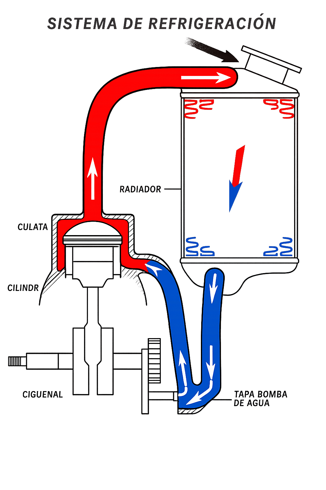
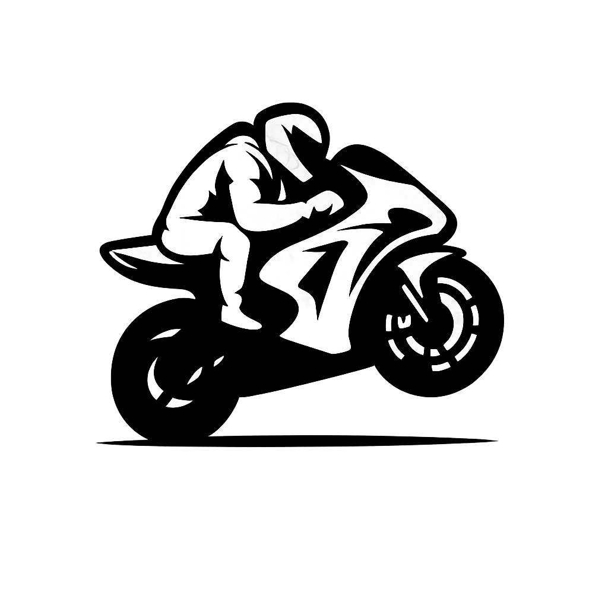

Arranque
El sistema de arranque es lo que te permite encender la moto. Actualmente, el arranque eléctrico es el más común por su facilidad y rapidez. Es un aspecto que mejora mucho la experiencia diaria..
aqui una lista de modelos que puden ser de utilidad
- Electric
- Kick
- Electric & kick
Encendido
El sistema de encendido genera la chispa necesaria para que el motor funcione. Es esencial para el rendimiento y la confiabilidad de la moto...
aqui una lista de modelos que puden ser de utilidad
- Full transistorized
- Full transistorized ignition
- Computer-controlled digital transistorized with 3-D mapping
- Computer-controlled digital transistorized with electronic advance
- Computer-controlled digital transistorised with electronic advance
- Digital transistorized with electronic advance
- Electronic, digital transistor
- CDI
- TCI
- Transistor Controlled Ignition
- Transistor Controlled
- Transistor Controlled
- DC-CDI
- TCBI with digital advance
- TCBI with Digital Advance
- Solid state CDI
- Electric CDI
- Digital DC-CDI
- TCBI Electronic Advance
- Digital CDI with 3 Coupler Options
- CDI with digital advanceI
- CDI with digital advance
- Digital CDI
- Digital
- CD-CDI
- Transistorized
- CDI Digital
- Electronic ignition (Transistorized)
- 3D-mapped digital ignition
- Electronic ignition
- 3D-mapped digital ignition system
- Fully transistorized
- Electronic ignition (transistorized)
- Digital/CDI
- Digitally-mapped DC-CDI
- Electronic ignition (CDI)
- Electronic intake pipe fuel injection, BMS-K+ electronic engine management with overrun cut-off and twin-spark ignition.
- Dual Spark
- Kokusan EMS
- Keihin EMS with RBW and cruise control, double ignition
- Continental EMS
- Contactless, controlled, fully electronic ignition system with digital ignition timing adjustment, type Kokusan
- Keihin EMS
- Kokusan EMS.
- Digital-inductive type via engine management system
- Digital electronic, integrated in the fuel injection system.
- ECU Electronics Magneti Marelli MIUG4 ø 32 mm
- Magneti Marelli digital electronic ignition system integrated in engine control system, with one spark plug per cylinder and “stick-coil” type coils
- Electronic with CDI capacity discharge
- CDI with variable advance
- Digital electronic, integrated with the injection
- Electronic with CDI capacity discharge
- Integrated ignition - injection system MVICS (Motor and Vehicle Integrated Control System) with three injectors. Engine control unit Eldor EM2.0, throttle body full ride by wire Mikuni, pencil-coil.
- Engine control unit Eldor Nemo 2.1, throttle body full ride by wire Mikuni, pencil-coil with ion-sensing technology,
- Integrated ignition - injection system MVICS (Motor and Vehicle Integrated Control System) with three injectors Engine control unit Eldor EM2.0, throttle body full drive by wire Mikuni, pencil-coil with ion-sensing technology, control of detonation and
- ECU with racing map
- MVICS (Motor and Vehicle Integrated Control System) with six injectors Engine control unit Eldor EM2.0, throttle body full ride by wire Mikuni, pencil-coil with ion-sensing technology, control of detonation and misfire Torque control with four maps.
- ECU - TLI
- Delphi MT05
- ECU – Delphi MT05
- TLI
- Delphi
- Athena MB2QJG
- C.D.I
- Analogue CDI
- Seletra 2p D36
- AET digital EMS
- MEDJ digital EMS
- Keihin EMS with RBW, twin ignition
- Electronic
- Ride by Wire with integral management of 3 engine maps
- Independent spark control through ECU
- IDI-Dual mode digital ignition
- Mapped ignition system
- ECU
- Digital IDI with Ignition Map Technology
- Digital Ignition
- Fly wheel magneto 12V, 200W @ 5000 rpm Ignition
- DC - Digital TCI
- AC/DC ignition system
- Digital DC CDI
- IDI - Dual Mode Digital Ignition
- Microtech ECU on European version
- Mircotech
- Microtech ECU
Refrigeración
Este sistema evita que el motor se sobrecaliente. Puede ser por aire o líquido, siendo este último más eficiente. Es clave para mantener el motor en buen estado y prolongar su vida útil..

aqui una lista de modelos que puden ser de utilidad
- Liquid
- Air
- Oil & air
Recorrido rueda delantera
Indica cuánto puede comprimirse y expandirse la suspensión delantera. Un mayor recorrido mejora la capacidad de absorber impactos, lo que es ideal para terrenos irregulares..
aqui una lista de modelos que puden ser de utilidad
- 130 mm (5.1 inches)
- 125 mm (4.9 inches)
- 230 mm (9.1 inches)
- 81 mm (3.2 inches)
- 120 mm (4.7 inches)
- 118 mm (4.6 inches)
- 107 mm (4.2 inches)
- 118 mm (4.7 inches)
- 150 mm (5.9 inches)
- 109 mm (4.3 inches)
- 180 mm (7.1 inches)
- 200 mm (7.9 inches)
- 95 mm (3.7 inches)
- 135 mm (5.3 inches)
- 127 mm (5.0 inches)
- 193 mm (7.6 inches)
- 170 mm (6.7 inches)
- 171 mm (6.7 inches)
- 119 mm (4.7 inches)
- 131 mm (5.2 inches)
- 112 mm (4.4 inches)
- 71 mm (2.8 inches)
- 140 mm (5.5 inches)
- 221 mm (8.7 inches)
- 157 mm (6.2 inches)
- 254 mm (10.0 inches)
- 231 mm (9.1 inches)
- 315 mm (12.4 inches)
- 274 mm (10.8 inches)
- 305 mm (12.0 inches)
- 210 mm (8.3 inches)
- 275 mm (10.8 inches)
- 124 mm (4.9 inches)
- 110 mm (4.3 inches)
- 92 mm (3.6 inches)
- 287 mm (11.3 inches)
- 97 mm (3.8 inches)
- 206 mm (8.1 inches)
- 260 mm (10.2 inches)
- 100 mm (3.9 inches)
- 204 mm (8.0 inches)
- 115 mm (4.5 inches)
- 190 mm (7.5 inches)
- 310 mm (12.2 inches)
- 300 mm (11.8 inches)
- 90 mm (3.5 inches)
- 250 mm (9.8 inches)
- 160 mm (6.3 inches)
- 240 mm (9.4 inches)
- 76 mm (3.0 inches)
- 74 mm (2.9 inches)
- 78 mm (3.1 inches)
- 142 mm (5.6 inches)
- 132 mm (5.2 inches)
- 220 mm (8.7 inches)
- 117 mm (4.6 inches)
- 111 mm (4.4 inches)
- 121 mm (4.8 inches)
- 145 mm (5.7 inches)
- 70 mm (2.8 inches)
- 205 mm (8.1 inches)
- 285 mm (11.2 inches)
- 215 mm (8.5 inches)
- 278 mm (10.9 inches)
- 108 mm (4.2 inches)
- 178 mm (7.0 inches)
- 159 mm (6.3 inches)
- 218 mm (8.6 inches)
Recorrido rueda trasera
Este dato indica cuánto puede subir y bajar la rueda trasera gracias a la suspensión, normalmente medido en milímetros. En pocas palabras, muestra qué tanto puede absorber los golpes cuando pasas por huecos, baches o terrenos irregulares. Es un aspecto muy importante porque influye directamente en la comodidad y en la estabilidad de la moto. Un mayor recorrido significa que la moto puede adaptarse mejor a caminos difíciles o destapados, haciendo la conducción más suave y segura. Por otro lado, un recorrido más corto suele encontrarse en motos deportivas o urbanas, donde se prioriza la estabilidad en carretera y una respuesta más firme. Elegir bien este valor depende del uso que le vayas a dar: si es para ciudad, no necesitas tanto recorrido, pero si planeas ir por terrenos irregulares o viajar, un buen recorrido trasero marca una gran diferencia en la experiencia de manejo..

aqui una lista de modelos que puden ser de utilidad
- 119 mm (4.7 inches)
- 130 mm (5.1 inches)
- 220 mm (8.7 inches)
- 73 mm (2.9 inches)
- 131 mm (5.2 inches)
- 126 mm (5.0 inches)
- 70 mm (2.8 inches)
- 91 mm (3.6 inches)
- 132 mm (5.2 inches)
- 107 mm (4.2 inches)
- 135 mm (5.3 inches)
- 137 mm (5.4 inches)
- 143 mm (5.6 inches)
- 103 mm (4.1 inches)
- 68 mm (2.7 inches)
- 125 mm (4.9 inches)
- 145 mm (5.7 inches)
- 232 mm (9.1 inches)
- 188 mm (7.4 inches)
- 189 mm (7.4 inches)
- 122 mm (4.8 inches)
- 120 mm (4.7 inches)
- 110 mm (4.3 inches)
- 141 mm (5.6 inches)
- 191 mm (7.5 inches)
- 74 mm (2.9 inches)
- 185 mm (7.3 inches)
- 109 mm (4.3 inches)
- 180 mm (7.1 inches)
- 224 mm (8.8 inches)
- 168 mm (6.6 inches)
- 231 mm (9.1 inches)
- 206 mm (8.1 inches)
- 307 mm (12.1 inches)
- 274 mm (10.8 inches)
- 315 mm (12.4 inches)
- 240 mm (9.4 inches)
- 275 mm (10.8 inches)
- 105 mm (4.1 inches)
- 108 mm (4.3 inches)
- 118 mm (4.6 inches)
- 99 mm (3.9 inches)
- 83 mm (3.3 inches)
- 295 mm (11.6 inches)
- 260 mm (10.2 inches)
- 112 mm (4.4 inches)
- 92 mm (3.6 inches)
- 170 mm (6.7 inches)
- 219 mm (8.6 inches)
- 215 mm (8.5 inches)
- 142 mm (5.6 inches)
- 172 mm (6.8 inches)
- 200 mm (7.9 inches)
- 140 mm (5.5 inches)
- 136 mm (5.4 inches)
- 89 mm (3.5 inches)
- 150 mm (5.9 inches)
- 300 mm (11.8 inches)
- 156 mm (6.1 inches)
- 310 mm (12.2 inches)
- 305 mm (12.0 inches)
- 77 mm (3.0 inches)
- 129 mm (5.1 inches)
- 250 mm (9.8 inches)
- 155 mm (6.1 inches)
- 115 mm (4.5 inches)
- 210 mm (8.3 inches)
- 102 mm (4.0 inches)
- 78 mm (3.1 inches)
- 114 mm (4.5 inches)
- 75 mm (3.0 inches)
- 76 mm (3.0 inches)
- 51 mm (2.0 inches)
- 124 mm (4.9 inches)
- 123 mm (4.8 inches)
- 165 mm (6.5 inches)
- 50 mm (2.0 inches)
- 40 mm (1.6 inches)
- 56 mm (2.2 inches)
- 60 mm (2.4 inches)
- 55 mm (2.2 inches)
- 45 mm (1.8 inches)
- 28 mm (1.1 inches)
- 65 mm (2.6 inches)
- 46 mm (1.8 inches)
- 266 mm (10.5 inches)
- 270 mm (10.6 inches)
- 93 mm (3.7 inches)
- 100 mm (3.9 inches)
- 101 mm (4.0 inches)
- 90 mm (3.5 inches)
- 179 mm (7.0 inches)
- 161 mm (6.3 inches)
- 227 mm (8.9 inches)
Velocidad máxima
Es la velocidad más alta que puede alcanzar la moto en condiciones ideales. Aunque muchas personas se fijan en este dato, en la práctica no siempre es lo más importante. Sin embargo, sí da una idea del potencial del motor y del tipo de rendimiento que puedes esperar...
aqui una lista de modelos que puden ser de utilidad
- 83.0 km/h (51.6 mph)
- 105.0 km/h (65.2 mph)
- 160.0 km/h (99.4 mph)
- 139.0 km/h (86.4 mph)
- 120.0 km/h (74.6 mph)
- 200.0 km/h (124.3 mph)
- 190.0 km/h (118.1 mph)
- 201.2 km/h (125.0 mph)
- 197.0 km/h (122.4 mph)
- 199.6 km/h (124.0 mph)
- 141.6 km/h (88.0 mph)
- 143.0 km/h (88.9 mph)
- 193.1 km/h (120.0 mph)
- 160.9 km/h (100.0 mph)
- 178.6 km/h (111.0 mph)
- 235.0 km/h (146.0 mph)
- 170.0 km/h (105.6 mph)
- 300.0 km/h (186.4 mph)
- 244.0 km/h (151.6 mph)
- 237.0 km/h (147.3 mph)
- 240.0 km/h (149.1 mph)
- 230.0 km/h (142.9 mph)
- 45.0 km/h (28.0 mph)
- 90.0 km/h (55.9 mph)
- 135.0 km/h (83.9 mph)
- 114.0 km/h (70.8 mph)
- 123.0 km/h (76.4 mph)
- 127.0 km/h (78.9 mph)
- 95.0 km/h (59.0 mph)
- 78.0 km/h (48.5 mph)
- 157.7 km/h (98.0 mph)
- 164.2 km/h (102.0 mph)
- 158.0 km/h (98.2 mph)
- 137.0 km/h (85.1 mph)
- 169.0 km/h (105.0 mph)
- 130.0 km/h (80.8 mph)
- 164.0 km/h (101.9 mph)
- 129.0 km/h (80.2 mph)
Lubricación
La lubricación distribuye el aceite dentro del motor para reducir la fricción y el desgaste. Sin una buena lubricación, el motor se dañaría rápidamente. Es uno de los sistemas más importantes para la durabilidad.
aqui una lista de modelos que puden ser de utilidad
- Wet sump
- Wet Sump
- Force-feed lubrication, wet sump
- Forced lubrication, wet sump
- Forced, semi-dry sump
- Petrol mix
- Forced lubrication, semi-dry sump
- Dry sump
- Semi-dry-sump
- Wet sump
- Wet sump with oil cooler
- Forced oil lubrication with 3 oil pumps
- Forced oil lubrication with 2 oil pumps
- Wet sump lubrication system with oil radiator and two oil pumps (lubrication and cooling)
- Automatic mixer
- Separate mixing with mechanical oil pump
- Separate fuel-oil mixing with mixer pump
- Forced lubrication with wet sump
- Forced with wet sump
- Pressure splash
- Pressure splash
- Pressure splash lubrication
- Mixture oil lubrication
- Forced circulation with lobe pump - circuit capacity: 1.78 Kg